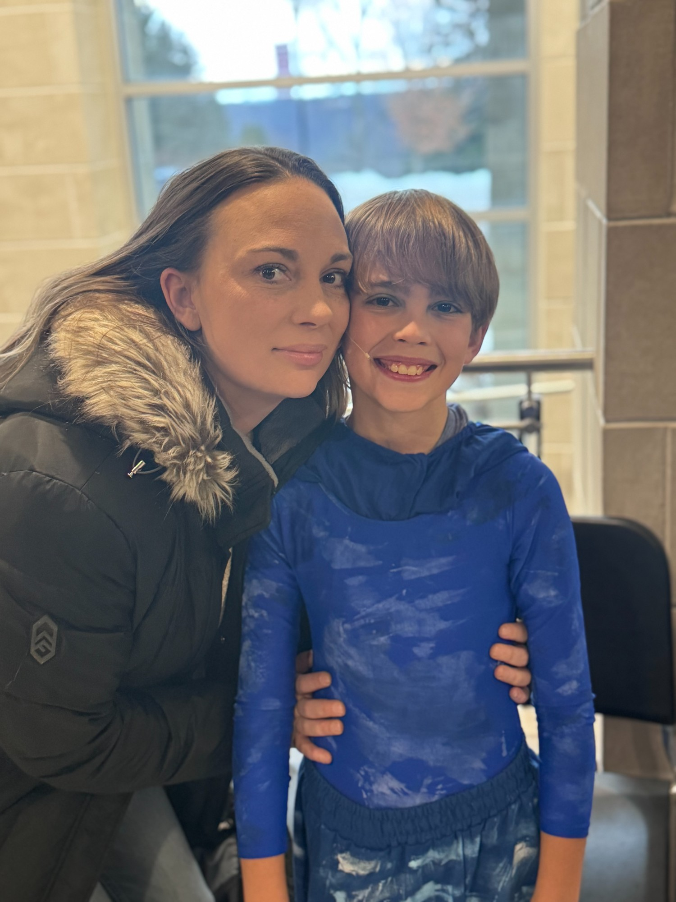

Mason's Reflections on Mom ❤️
By Mason, age 13 · Mother's Day 2026
What's the first thing that pops into your head when you think of Mom?
How much I love her.
What is Mom genuinely the best at, better than anyone you know?
Puzzles. She is amazing at puzzles.
What's something Mom does for you that you don't think she realizes you notice?
She works extremely hard to make all of us happy. And I really appreciate it. She makes a lot of sacrifices for us, for the little things, and the big things.
What's a sacrifice Mom has made for you or the family that you appreciate now?
How hard she works at her job. I know she doesn't enjoy it, but she does it to support the family. And I really do appreciate it.
What's the best advice Mom has ever given you?
Mom has told me to stand up for what I believe in no matter what. I will take that advice on my life journey with me.
What is something Mom believes that you also believe — that you got from her?
My political views. I learn a lot from mom.
What's a moment Mom was there for you that you'll never forget?
Whenever I get hurt. When I got stung by a jellyfish, or when I was in the hospital, she always wanted me to get better, and she helped me power through those times.
What's something Mom loves that you didn't understand when you were younger but get now?
Puzzles. I wouldn't think puzzles were so fun when I was little. But now, I enjoy puzzles.
What's the funniest thing Mom has ever done?
When we were at a boardwalk, we passed by a stand with two parrots. Mom was so afraid of the parrots that she went out of the walking path to avoid them.
What's Mom's signature thing, the trait or quirk that's 100% her?
Organization. Mom loves to be organized.
When you have kids someday, what's something you'd want to do the way Mom did?
I'd like to teach my kids, like how she raised me, to always stand up for yourself. And to never let someone else decide who you are. No one gets to make that decision but you.
What's something Mom says all the time that you'll probably catch yourself saying as an adult?
"I love you to the moon and back."
What does Mom love about being your mom?
She loves that I'm polite to people.
What's a way you and Mom are similar?
We both have pride in our country and beliefs. We are not scared to show the world what we believe in. And I know that I got my pride and the fact that I am not scared to show my beliefs from her.
What's a way you and Mom are different, and why is that actually a good thing?
Mom says that she is completely convinced that I will be going to law school. I always wanted to go to MIT. We have a $100 bet on it.
What's something you wish Mom did more for herself?
I wish she spent more time doing what she loves. I love seeing mom happy.
What do your friends notice about Mom that you might not say out loud?
My friends haven't really met her. Except, mom ran into Ava at one point. I don't talk to Ava much anymore, but Ava said that my mom was really nice.
What's a hard thing Mom has gotten through that you're proud of her for?
Work. Dealing with rude people and sick patients. I know it's not easy.
What do you want Mom to know that you don't usually say?
I want her to know that she is the perfect mom. I couldn't ask for anyone better. She does the mom stuff right.
Mom, the thing I want you to know is…
…that I'm proud of you. Whatever I accomplish in life, it will be because of you, it will be from what you have taught me.
Our Favorite Moments
Just Mason & Mom